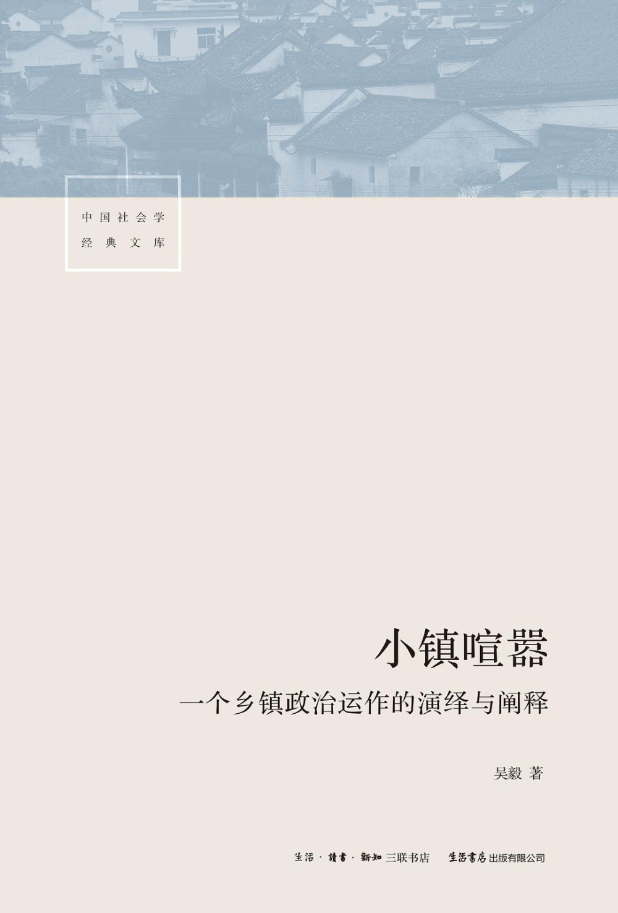

|  |
小镇喧嚣：一个乡镇政治运作的演绎与阐释
吴毅
|
再版说明
致谢
主要人物一览表
引子
一 迎检，迎检
中心工作与迎检
村里的“作业”
动员再动员：确保高分过关
二 不开发，政府怎么办？
林书记的规划
开发的政治学
洲头的纷争
三 要钱是孙子，无钱是羔羊
“这狗×的收税”
“税源不够，靠关系去协调”
“开的价高于亩平负担，地就得租”
四 播撒希望
重振豆乡
小藠头，大文章
谢张村也想卖地
五 周旋于商民之间
叶先生与洲头村的租地纠纷
合同也要随形势而变化
“没有硝烟的战斗”
六 媒
洲头的突破
石场风波起
临时占地中的生意经
七 “可嫌”的农民
“农民既可怜又可嫌”
种粮不如“种房”
“道上的伢们”
八 僵持
叶先生的回应
开工前的反复
断不清的土地案
九 基层的理性
“这是一种政治行为”
“诱民致富”
“扶强不扶弱”
十 又是一轮收钱时
当“讨要者”成为“被讨要者”
征收进入攻坚阶段
国、地两税提前过关
十一 了结难题
洲头纷争的补遗
叶桦事件的终结
藠头下种了
十二 利益交关
花小钱办大事
最后的征收
石场业主上京了
十三 新的年轮
突起的争地风潮
“伢们”也来凑热闹
“耗油”与“就范”
十四 未完的结局
藠头种植的喜与忧
陈同年的困窘
征地被冻结了
业主们欲罢又起
不收税干部做什么？
又到了迎检的时候
十五 幕落幕启
研究关怀与策略的自白
权力格局“错置”与官民行为“悖论”
非正式权力技术的凸显
政权建设抑或治理转型